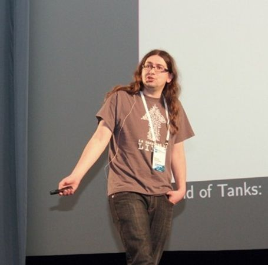

Доклады
Техническая
-
 Бартунов Олег PostgreSQL Europe ,
Бартунов Олег PostgreSQL Europe ,Обсуждаем PostgreSQL и другие СУБД
Общение на тему PostgreSQL и других СУБД
-
Чернов Владислав Badoo ,
Continuous delivery в крупном интернет проекте
В данном докладе речь пойдет об основных этапах реализации Continuous delivery. Будет показан весь процесс от выбора схемы разработки в системе контроля версий,процесса разработки, тестирования ПО и автоматизации развертывания на production-серверах. Также будут рассмотрены основные ошибки при переходе к схеме непрерывной интеграции и непрерывного развертывания на примере компании Badoo.
-
 Кулаков Андрей Undev , Тимлид
Кулаков Андрей Undev , ТимлидТехнологии на службе нашего города
Каждый инженер должен применять свои знания не только для повседневной работы, но и для пользы обществу. Более 2 лет назад мы разработали Ulway - сервис, который призван информировать население об обстановке на дорогах города. Главной задачей при его разработке было построить систему, которая могла бы существовать и адекватно работать без контроля со стороны. Ежедневно им пользуется более 2000 водителей. В рамках доклада я расскажу об архитектуре сервиса, сложностях с которыми мы столкнулись при его разработке и найденных решениях (начиная с демона на Go и заканчивая применением Machine Learning для фильтрации сообщений)
-
Федоренко Вячеслав Turnkey Ecommerce , Технический директор
Методики оптимизации высоконагруженных интернет магазинов.
В докладе будут рассмотрены инструменты и технологии применяемые для оптимизации высоконагруженных интернет магазинов на платформе Magento Enterprise. Доклад затронет полный цикл оптимизации проекта: этап разработки, этап оптимизации серверного окружения, этап мониторинга проекта после запуска. В докладе будут рассмотрены технологии применяемые на практике.
-
 Авдеев Алексей Go-Promo , Фронтенд разработчик
Авдеев Алексей Go-Promo , Фронтенд разработчикПрименение BackboneJS для рефакторинга фронтэнда веб-приложения
1. Используйте JS-фрэймворки для достижения модульности, построения грамотной архитектуры и упрощения поддержки фронтэнда веб-приложения. 2. BackboneJS - очень гибкий фрэймворк. 3. Избавляемся от каши в application.js (main.js).
-
Бушмелев Юрий ,
Эволюция системного администратора
Работа системного администратора интересна и полна неожиданностей. До какого-то момента это приносит радость и удовлетворение. Но периодически специалист обнаруживает, что стоит в тупике, и не знает, куда идти дальше. В своем докладе я постараюсь построить карту таких «тупиков» и возможных путей выхода из них. Доклад рассчитан как на тех, кто еще только выбирает свое направление в IT, так и на системных администраторов, внезапно обнаруживших «потолок» своего роста.
-
 Калашян Седрак UMI.CMS , руководитель SaaS направления
Калашян Седрак UMI.CMS , руководитель SaaS направленияВнедрение процесса разработки там, где его не было 3 года
Разумеется, у всех есть процесс разработки. Но давайте будем откровенными: " тяп-ляп и в продакшн" и "срочно пиши код" не являются процессами разработки в команде от 3х разработчиков, наш опыт позволяет сказать это с уверенностью. Как организовать свою команду, чтобы работа была эффективной, сроки соблюдались и все были довольны. Практический опыт от руководителя SaaS направления, сервиса Umi.ru.
-
 Кириллов Александр undev , программист
Кириллов Александр undev , программистВиртуализация как инструмент разработчика
Расскажу об инструменте Vagrant, постараюсь ответить на вопросы "кому нужна виртуализация?", "зачем виртуализация разработчику?". Подробно рассмотрю решение некоторых проблем, возникающих при разработке программного обеспечения. Также познакомлю слушателей с дополнениями, которые во многом упрощают использование Vagrant, коснусь других инструментов (docker) и как они могут заменить Vagrant.
-
 Юнев Владимир Microsoft , Эксперт по стратегическим технологиям
Юнев Владимир Microsoft , Эксперт по стратегическим технологиямМастер класс: "Быстрый старт Стартапа в облаке"
Как получить и начать использовать облачные мощности даром. Сценарии Dev&Test в облаке.
-
Юнев Владимир Microsoft , Эксперт по стратегическим технологиям
Мастер-класс "Единый облачный бэкенд для всех мобильных платформ"
iOS, Android, Windows, Windows Phone, Xamarin, PhoneGap, HMTL5/JS и т.д. Решение задачи рассылки пуш-уведомлений разным группам, на разных языках, миллионам пользователям на разные платформы.
-
Белоцерковский Александр Microsoft , IT-евангелист
Мастер-класс "Инфраструктура в облаке"
Виртуальные машины и сети. VPN между облаком и рабочем местом. Кластеры и решение задач HPC и Big Data по запросу.
-
 Чистяков Александр Git in Sky , Senior Cloud Engineer
Чистяков Александр Git in Sky , Senior Cloud EngineerОптимизация производительности большой унаследованной PostgreSQL базы
Наша компания занимается консультированием в сферах управления проектной инфраструктурой, автоматизации управления конфигурацией и оптимизации производительности. По роду деятельности нам постоянно приходится сталкиваться с поддержкой и оптимизацией уже устоявшихся больших проектов. В уже существующей базе большого проекта может быть что угодно - хранимые процедуры, триггеры, много индексов, лишние или недостающие связи между таблицами, неоптимальные запросы. Как правило, необходимо разобраться в ситуации и принять меры, не слишком нарушая нормальную работу системы (нормальность работы часто уже бывает нарушена, например, в связи с ростом аудитории проекта). Не так давно наша компания как раз провела ряд работ по оптимизации производительности PostgreSQL базы объемом в несколько терабайт, о предпринятых шагах, инструментах анализа и логике принятия решений в процессе оптимизации мы и хотели бы рассказать.
-
Сергеев Антон Flysoft , Разработчик
Асинхронные задачи в iFunny
В докладе я расскажу про то, как по мере роста аудитории и функционала проекта iFunny возникла потребность асинхронно выполнять тяжелые задачи, требующие значительного количества серверных ресурсов и времени. Проведу краткий анализ существующих решений и поведаю, как мы дошли до Python и Celery. Подробнее остановлюсь на архитектуре, которую мы выбрали. Celery: быстрый старт, важные настройки, тюнинг. Мониторинг и логирование. Существующие проблемы и планы на будущее.
-
 Васильков Василий Ecwid , Разработчик
Васильков Василий Ecwid , РазработчикКартинки в Ecwid: подходы к хранению и обработке
Ecwid - конструктор интернет-магазинов, позволяющий Вам завести магазин и начать продавать в интернете за 5 минут. Прямо сейчас у нас полмиллиона магазинов в которых сотни миллионов картинок на десятки терабайт. Каждый день мы обрабатываем и сохраняем до миллиона новых картинок от наших пользователей (загрузка, масштабирование etc.). Все это хозяйство надо хранить, обрабатывать и показывать пользователям. За 5 лет мы сменили несколько подходов к обработке и хранению картинок, про это и будет доклад.
-
Мосев Иван AltexSoft , глава PHP-департамента
Сравнение крупнейших облачных провайдеров Amazon, Rackspace и Windows Azure на личном опыте использования
В докладе рассматривается уникальный личный опыт применения крупнейших облачных провайдеров Amazon, Rackspace и Windows Azure, а также некоторых других, для построения и размещения реальных проектов на базе PHP и других платформ. Дается сравнение слабых и сильных сторон, рассматриваются трудности, с которыми мы столкнулись при развертывании решений в облаке и их решение.
-
 Аксенов Андрей Sphinx Technologies Inc , CEO
Аксенов Андрей Sphinx Technologies Inc , CEOКак устроен NoSQL
Если вы уже знаете, что такое B+tree, Fractal tree, LSM, SSTable, columnar storage, Bloom filter, read/write amplification, что значат буквы No в слове NoSQL, каким чудом поколоночные базы жмут данные в 100+ раз, и почему файл на диске тоже NoSQL, только маленький и злой, вам совершенно нечего делать на этом докладе. Для всех остальных мы устроим краткий обзор всего цветничка разных структур хранения данных, использующихся в современных постреляционных БД и, понятное дело, попытаемся еще сильнее запутать ответы на главные вопросы бытия ("Так все же SQL или NoSQL победит?", "Какую базу брать?", "Отчего у человека грустное хлебало?"). Обзирать будем кучу разных техник, поэтому принудительно поверхностно и совсем без привязки к конкретным реализациям. То есть после этого доклада вы НЕ узнаете, какая Новая Модная База быстрее, лучше и все такое. Зато поймете, 1) какие структуры данных сейчас бывают внутри, 2) в какие ходовые характеристики и почему они выливаются. И, пожалуй, сможете делать выбор несколько более осознанно. Предполагаемая аудитория: кто угодно.
-
Семенов Влад 2gis , Ведущий javascript-программист
Новый Онлайн и всеядный JavaScript
К современным веб-приложениям начали предъявляться новые стандарты качества. Веб-приложения должны быть отзывчивыми — пользователь не готов ждать перезагрузки страницы при каждом своем действии и хочет получать моментальный фидбэк от интерфейса. Это ведет к определенным требованиям — приложения должны выполняться на клиенте (в браузере пользователя) и использовать сервер исключительно как бэкенд. При этом в классическом варианте решения задачи приложение перестает индексироваться поисковиками, тк поисковики воспринимают только контент сгенерированный на сервере и пока не умеют в достаточной мере понимать клиентскую логику. В докладе я расскажу как можно решить эту нетривиальную задачу, а так же раскрою вопрос о правильной архитектуре, позволяющей масштабировать и переиспользовать функционал веб-приложения. Целевая аудитория — javascript-программисты, frontend-разработчики, веб-программисты
-
Назаров Константин Parallels , Руководитель Release Team
Экстремально предвзятый взгляд на версионирование программных продуктов: как запутать релиз-цикл раз и навсегда
Как и почему неправильные схемы версионирования могут привести к проблемам в продукте. Мы рассмотрим самые «популярные» ошибки и их последствия. В том числе, почему использование версий вида 3.6.2.23142.8993 — не лучшая идея. Если вы не знаете, что такое semantic versioning, ни разу не сталкивались с проблемами несовместимости минорных версий API, или планируете грандиозный продукт, но версионирование оставляете на потом — этот доклад для вас.
-
 Торчинский Филипп JetBrains , Эксперт по технологиям
Торчинский Филипп JetBrains , Эксперт по технологиямБыстрая веб-разработка на Котлине
Можно ли перестать писать на PHP, оставаясь при этом на рынке высокоскоростной веб-разработки? Можно ли сделать код сайта на одном языке, без использования HTML, CSS и SQL? Правда ли, что Kotlin для этого уже подходит? Доклад отвечает на эти вопросы положительно. Кроме того, будет рассказано о непростом сайте, уже написанном в JetBrains на Kotlin, а также вживую показано, как можно сделать простой сайт за час-другой.
-
 Каримбаев Тимур Ютинет , Технический директор
Каримбаев Тимур Ютинет , Технический директорSOA (Service Oriented Architecture) как средство борьбы со сложностью в веб-проекте
Откуда берется сложность в e-commerce: небольшая вводная часть про Ютинет.ру: - видимая всем витрина - это небольшая часть платформы, обслуживающей десятки торговых компаний; - необходимость постоянного обновления и внедрения нового функционала; - большое количество разнообразных служб, работающих с одной предметной областью. Причины выбора именно SOA-архитектуры. Аргументы "за" и "против" в зависимости от типа проекта. - Разрастание функционала ведет к росту зависимостей, что, в свою очередь, ведет к проблемам контроля. - Когда над одним кодом одновременно работают 20 человек, становится сложнее контролировать результат - как с функциональной точки зрения, так и с технической. - Разделение проекта на сервисы позволяет изолировать данные и методы работы с ними в пределах API - это добровольное самоограничение, дающее как преимущества, так и проблемы. - Увеличение издержек на разработку: из чего оно складывается и где обходится. - Вертикальное масштабирование нагрузки вместо горизонтального. - Возможность использовать подходящие технологии для каждого сервиса. В задачах с бизнес-логикой в основном используется PHP + Postgresql, а в тех задачах, где нужно обрабатывать большое количество данных или просто держать их в памяти, - Java. API позволяет делать прозрачное использование сервисов независимо от применяемых технологий. Проектирование и реализация с примерами. - Основная идея: изоляция данных и функционала над ними. - Наши принципы проектирования сервисов: 1) сервис ничего не знает о своих клиентах; 2) сервис формируется не столько вокруг функционала, сколько вокруг данных, с которыми он работает; 3) доступ к функциям и данным сервиса снаружи невозможен. - Примеры сервисов и взаимодействия между ними. Техническая сторона вопроса: - особенности различных протоколов обмена данными: ( SOAP/REST/thrift/socket); - использование Zookeeper для координации сервисов; - размещение сервисов на серверах.
-
 Сербул Александр 1С-Битрикс , Руководитель направления контроля качества интеграции и внедрений
Сербул Александр 1С-Битрикс , Руководитель направления контроля качества интеграции и внедренийУправление качеством в гибких методологиях разработки - как "дожить" до релиза
В последние годы стали очень популярны, особенно для веб-разработки, гибкие методологии: Scrum/XP/Kanban и другие из семейства Agile... Однако, на практике, особенно при запуске сложных/высоконагруженных веб-систем, ярко проявляется обратная сторона гибких процессов, в т.ч. резко снижается качество и проект становится фактически неуправляемым. Поговорим о сильных и слабых местах гибких методологий в контексте обеспечения качества, детально разберем Scrum. Поделюсь богатым собственным опытом. Разберем типичный веб-проект по этапам и выстроим простую и эффективную модель обеспечения качества как в процессе разработки, так и дальнейшей эксплуатации. Дополнительно я расскажу как обеспечивается качество и какие инструменты используются при гибкой разработке высоконагруженных облачных сервисов компании.
-
 Бындю Александр ByndyuSoft , CTO/founder
Бындю Александр ByndyuSoft , CTO/founderCQRS на практике. В поиске точки масштабирования и новых метафор
Принцип Command Query Responsibility Segregation (CQRS) довольно давно был описан, но не так давно оброс примерами реализаций и готовыми фреймворками с открытым исходным кодом. Какие проблемы и решения возникают при применении CQRS? Я рассмотрю ряд вопросов, всплывающих в реальных проектах, покажу, где появляются возможности по масштабированию и построению гибких решений. Для начала мы кратко посмотрим на суть CQRS, основные идеи и его типичные реализации. Дальше углубимся в детали: эволюция кода с делением на команды и запросы, эволюция архитектуры системы и применение к ней новых метафор, стоит ли использовать Event Sourcing и какие есть ограничения, как CQRS сочетается с DDD? и т.д. Все примеры будут на .NET/C#
-
 Мокевнин Кирилл undev , руководитель филиала
Мокевнин Кирилл undev , руководитель филиалаМногопользовательская игра для программистов: от идеи до реализации “codebattle”
На данный момент существует большое количество сервисов для обучения программированию. Многие из них пытаются геймифицировать процесс для удержания аудитории и поддержки высокой мотивации обучения. Часть из них даже с элементами соревнования, но ни один из них не добавляет адреналина в процесс обучения. И тогда пришла идея сделать сервис на котором участники смогут соревноваться друг с другом в реальном времени. Так появился кодобатл - обучающий сервис, в котором два участника одновременно пишут код на скорость. В процессе реализации стояло множество концептуальных вопросов: какую платформу выбрать для soft realtime взаимодействия, как исполнять код любого языка в защищеном режиме, что использовать для реализации rich frontend, как быстро генерировать множество заданий под множество языков, как бороться с накрутками, хаками и копипастом, как обеспечить игроков соперниками, как обеспечить обновление кода без остановки сервиса, как организовать управление инфраструктурой. и множество других вопросов. В докладе я постараюсь ответить на самые интересные вопросы/задачи. Расскажу почему и зачем в бекнде erlang, на фронтенде reactjs, в хроме extension. Для чего понадобилось подключать rabbitmq и redis. Как быстро развернуть инфраструктуру с помощью ansible (и выкинуть chef). И почему для исполнения кода стоит взять docker и немного go. А так же, как обеспечить отказоустойчивость и легкий деплой.
-
Еманов Дмитрий FirebirdSQL , Разработчик
Хорошо незабытое старое, или идеи 20 лет спустя
Доклад посвящен некоторым малоизвестным программным решениям в СУБД InterBase/Firebird, которые прошли сквозь десятилетия и до сих пор сохранили право на жизнь. При этом акценты будут расставлены не столько с точки зрения использования СУБД, сколько с точки зрения обмена инженерным опытом. В том числе будут рассмотрены: архитектура OSRI: гибкость проектирования и эволюция кода, возможна ли жизнь без журнала транзакций, оптимизация индексного доступа с точки зрения дисковых операций, компактность индексов и производительность, версионность метаданных. Будут раскрыты как архитектурные, так и технологические и алгоритмические нюансы, а также дана оценка актуальности описанных решений на сегодняшний день. Аудитория: архитекторы, разработчики. Уровень: средний.
-
Мельников Максим wargaming.net , Разработчик
World of Tanks: один миллион игроков онлайн
World of Tanks - одна из самых популярных клиентских многопользовательских онлайн-игр в реальном времени. С момента релиза проекта в российском регионе, пик онлайна вырос с 15 тыс до 1.1 млн.Количество посещений за месяц на игровом портале выросло с 4 млн до 80 млн, согласно статистики Google Analytics. Петабайты скачиваются ежемесячно, только на установку/обновление игрового клиента.
-
Лукаш Егор ivi.ru , Разработчик
Как потерять данные и заставить всех вас ненавидеть
Попытка разобраться в современных способах хранения данных на примере реляционных и NoSQL решений. Все ли задачи можно решить полагаясь только на реляционную модель, возможно, стоит сместить акцент да другие структуры хранения данных? Являются ли NoSQL решения такими масштабируемыми как об этом говорят, или это лишь эйфория? Стоит ли закладываться на серьезное масштабирование на старте? Попытаемся разобраться в этих вопросах на примере опыта ivi.ru
-
Еманов Дмитрий FirebirdSQL , Разработчик
Оптимизатор SQL-запросов, стоимостная оценка и статистика
Оптимизатор запросов - одна из самых сложных и зачастую противоречивых подсистем любой современной СУБД. В своей работе он использует как эвристические правила, так и оценки на основе стоимости выполнения различных операций. В данном докладе мы поговорим о базовых принципах работы оптимизатора, о методах доступа к данным и принципах выбора наиболее эффективного из них, а также о влияющих на выбор статистических параметрах, доступных оптимизатору. Будут определены базовые термины и понятия, описана статистика уровней таблицы, индекса и столбца данных, продемонстрированы формулы оценки стоимости. Аудитория: разработчики, администраторы баз данных. Уровень: средний/продвинутый.
-
 Каримов Булат Яндекс , Менеджер по маркетингу
Каримов Булат Яндекс , Менеджер по маркетингуReal-time взаимодействия в Островах
Острова: вызовы, проблемы, достижения. Real-time взаимодействия на SERP. Как из обычного острова сделать real-time остров. О планах на будущее.
-
 Глушков Иван Echo , Software Engineer
Глушков Иван Echo , Software Engineernewsql: цифры и факты
В последнее время широкую популярность набирает новый класс систем NewSQL, которые с одной стороны использует реляционную модель данных и позволяют осуществлять поиск в этих данных с помощью SQL-запросов (богатство языка запросов зависит от реализации). С другой стороны эти системы заявляют о поддержке хорошей масштабируемости (в идеале, как у NoSQL). Где же подвох? Попробуем разобраться. В докладе я постараюсь покрыть следующие области: предпосылки появления NewSQL систем, особенности и характеристики, основные представители, цифры производительности на идеальном сферическом тестовом стенде в вакууме.
-
 Евтухович Иван Express42 , Консультант
Евтухович Иван Express42 , КонсультантКуда движется управление инфраструктурой
Это обзорный доклад о том, что происходит в DevOps-мире сегодня. В нем будут описаны основные идеи подхода "Инфраструктура как код". Так же будет рассказано о современном стеке технологий, используемом для реализации этого подхода, а именно: Chef/Ansible, Vagrant, Packer.
-
 Рыжиков Николай WaveAccess , Архитектор программного обеспечения
Рыжиков Николай WaveAccess , Архитектор программного обеспеченияРаботаем со сложной предметной областью
Программирование - прикладная дисциплина и порой нам нужно создавать информационные системы для незнакомой и сложной предметной области, когда простого здравого смысла уже не хватает, а овладение экспертизой требует многих лет (высшего) образования и практики. Можно попробовать все упростить до формочек и табличек или усложнить до декорируемых абстрактных фабрик адаптирующих мостов, но тогда градус абсурда начинает расти экспоненциально. В докладе я хотел бы рассказать про некоторые технические подходы, которые мы применяли для борьбы со сложностью в процессе разработки медицинской системы: Прототипирование и короткие итерации, Use Case Driven Development и почему MVC иногда плохо работает, Domain Driven Design как ментальный фреймворк, Стандарты и кодо-генерация, Существенная и Случайная Сложность - простота как залог долголетия.
-
Корзунов Антон Яндекс , Разработчик интерфейсов
API Яндекс.Карт: Сумеречная зона
Обзор граблей на которые так приятно наступать. Не смотря на то, что картографические сервисы давно надежны для многих, это все еще новые ощущения. По загадочным причинам даже опытные программисты продолжают неправильно работать нашим инструментом. Не надо так.
-
 Плешивцев Антон Aviasales , Senior Software Engineer
Плешивцев Антон Aviasales , Senior Software EngineerFrontend development for the win!
Фундаментальный доклад про разработку больших, сложных и запутанных javascript-приложений. Отвечает на следующие вопросы и затрагивает следующие темы: Срыв покровов. Тонкости javascript, о которых вы не подозревали или стеснялись спросить. То, что принято называть минусами языка, на самом деле является мощным инструментом разработки. Среди великого многообразия современных фреймворков для разработки фронтэнд-приложений очень сложно сделать правильный выбор. Так что же выбрать? Я отвечу на этот вопрос. С какой стороны подойти к проектированию приложения с учетом всего, что вы узнали в предыдуших пунктах? Я расскажу весь процесс в деталях. В каком направлении развивается индустрия, а какие библиотеки безнадежно устарели? Неожиданные признания очевидцев. Bonus track. Немного про Om.
-
Плешивцев Антон Aviasales , Senior Software Engineer
Как мы написали новый поисковый движок
Некоторое время назад команда разработчиков aviasales.ru, базирующаяся на о. Пхукет, разработала новый поисковой движок Ясень. В новую версию движка архитектурно заложены отказоустойчивость и высокая производительность. Если кратко, то я расскажу об этом: 1)Rails не катит для чего-то нестандартного - с какими сложностями столкнулись мы. 2)Попробуйте моделировать предметную область (это весело). 3)Попробуйте функциональную декомпозицию (как красиво отказаться от ООП). 4)SoA архитектура - много мелких сервисов со своим интерфейсом. 5)Про нашу архитектуру, DSL и принципы работы.
-
Савунов Василий Banki.ru , Директор по разработке
Что вас ждет на пути реализации SOA. Битрикс отступает.
Обзорный доклад о том, как компания Банки.Ру ( http://banki.ru ) перешла от монолитной архитектуры (Битрикс) к SOA. Как мы это решение принимали, анализировали, внедряли, и с чем нам пришлось столкнуться на этом пути. Чем нас не устроил Битрикс? Почему именно SOA? Из чего "строить" сервисную архитектуру? Какие вопросы нужно задать себе прежде чем реализовывать SOA? Какова цена внедрения SOA-подхода? Что в конечном итоге дал нашему проекту SOA-подход?
-
Юнев Владимир Microsoft , Эксперт по стратегическим технологиям
От PHP к Java и C# через Python и Node.js. Как писать облачные проекты на любимом языке?
Облачные технологии развиваются стремительными темпами. Вместе с развитием облаков, развиваются и инструменты разработчиков приложений, стираются границы между размещением кода в облако или в локальной инфраструктуре. В рамках этого доклада мы рассмотрим разработку современных приложений на знакомых нам языках программирования и привычных инструментах, но с размещением в новом масштабируемом облачном окружении. В докладе будут рассмотрены как подходы размещения кода в привычном окружении виртуальных машин (инфраструктура как сервис, IaaS), так и в более гибком окружении платформы как сервис (PaaS). В докладе мы рассмотрим, как накопленный опыт и любимые инструменты могут быть использованы для разработки приложений в новой облачной парадигме для проектов на любом языке: PHP, Java, C#, Ruby, Python, Node.js и т.д.
-
Бартунов Олег PostgreSQL Europe ,
Schema-less PostgreSQL 9.4 и другие новости
MongoDB правит бал в мире слабо-структурированных данных. Привлеченные в MongoDB инвестиции часто затмевают разум (особенно начинающих и доверчивых) разработчиков, которые с радостью бросаются в океан возможностей, предоставляемых NoSQL (это же круто!). Энтузиазм затихает, после осознания того факта, что бесплатно ничего не бывает и надо писать своими руками то, что десятилетиями прекрасно работает в традиционных реляционных базах данных, которые прекрасно справляются с нагрузками и данными 99% проектов и ваш проект не входит в оставшийся один процент. Уже больше 10 лет в PostgreSQL существует возможность работать со schema-less данными, используя расширение hstore. Hstore предлагает хранилище ключ-значение с сохранением всех реляционных возможностей, что сделало его самым используемым расширением PostgreSQL. Однако, возникающие технологии, основанные на популярном стандарте json, требуют от баз данных встроенную поддержку иерархических структур. Мы расскажем историю, как шла разработка документо-ориентированного хранилища и какие технологии стоят за новой функциональностью и производительностью нового json-а, а также о других интересных новых "фишках" PostgreSQL 9.4. Доклад рассчитан на хакеров и архитекторов.
-
Смородинников Кирилл Яндекс , Разработчик
Распределенные системы хранения данных.
Каким должно быть современное хранилище? Какие проблемы оно не может не решать? Какие технические детали обязаны в нем присутствовать? Что не могут решить большинство современных систем храниения и с каким проблемами придется столкнуться? Хранилище должно уметь работать с миллиардами объектов, терабайтами и петабайтами данных. Быть готовым к проблемам с сетью, железом и электричеством. При этом оставаться гибким и работоспособным. В презентации я расскажу как устроены современные отказоустойчивые хранилища на примере Elliptics, широко используемой в Яндексе распределенной системы хранения данных. Рассмотрим основные компоненты, их взаимодействие и то, как система справляется с неполадками. Сравним и проанализируем решения, реализованные в других подобных системах. Доклад ориентирован в первую очередь на разработчиков, использующих, разрабатывающих или просто интересующихся системами хранения данных.